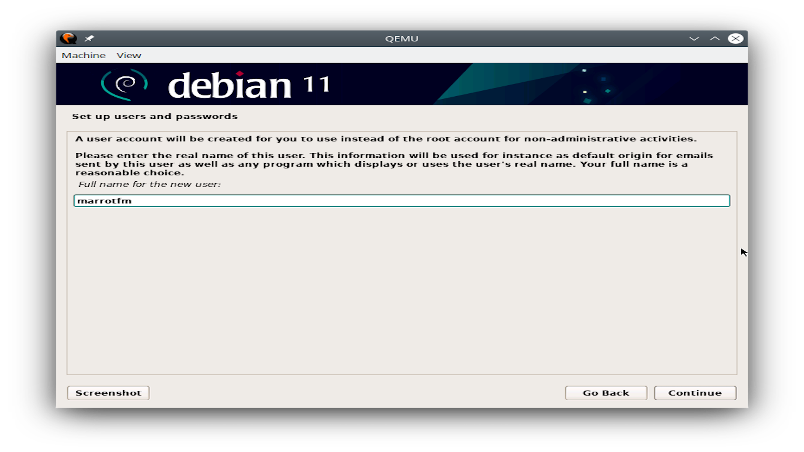

On peut voir sur cette capture d'écran l'empreinte de référence que l'on peut trouver sur un site officiel du projet Debian ainsi que l'empreinte calculée localement sur la copie de l'image ISO stockée sur la station Linux.

L'installateur Debian lorsqu'il nous demande de saisir le nom de login de l'utilisateur qui sera créé.